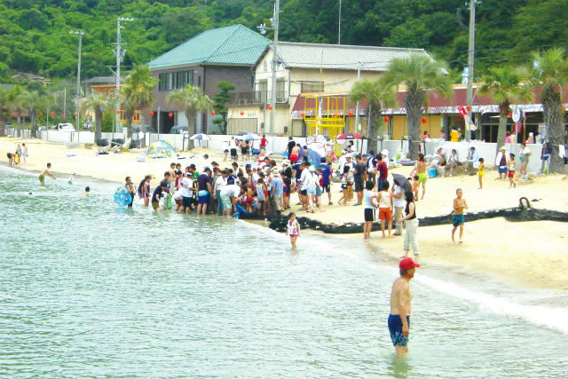
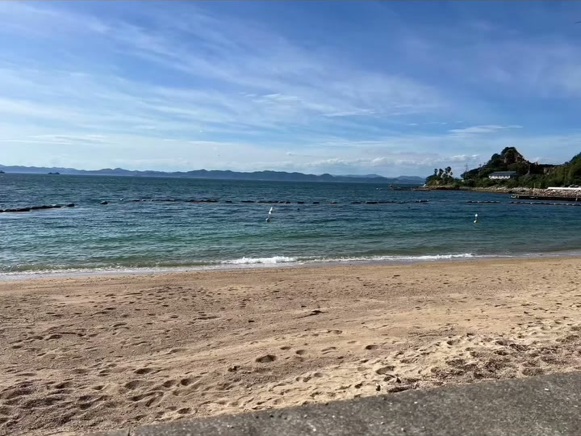
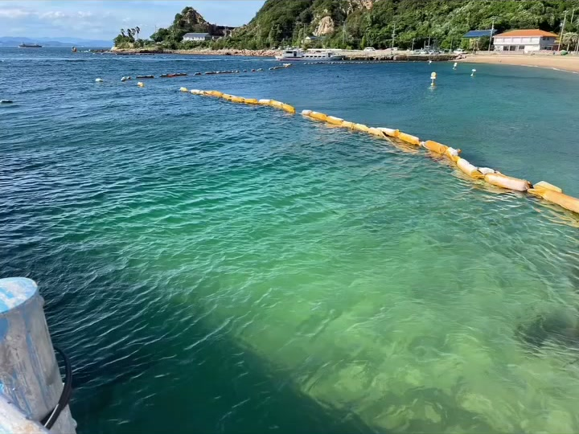

DAY 1 · 上午
男鹿島 海水浴場
img').src=this.src">

img').src=this.src">
img').src=this.src">01 · SEA BATHING
海水浴（立ノ浜 / 青井浜）
男鹿島的海水浴场以 透明的海水和白沙 出名，夏天是家庭戏水的好去处。人少、水清、浪小，特别适合带小学生。戴上蛙镜浮潜就能看到小鱼，退潮时还能在礁石边挖海螺、抓小螃蟹（磯遊び）——大人躺在沙滩上，孩子能玩一整天。上岛第一件事就是换泳装下海，把城市的燥热甩在姫路。